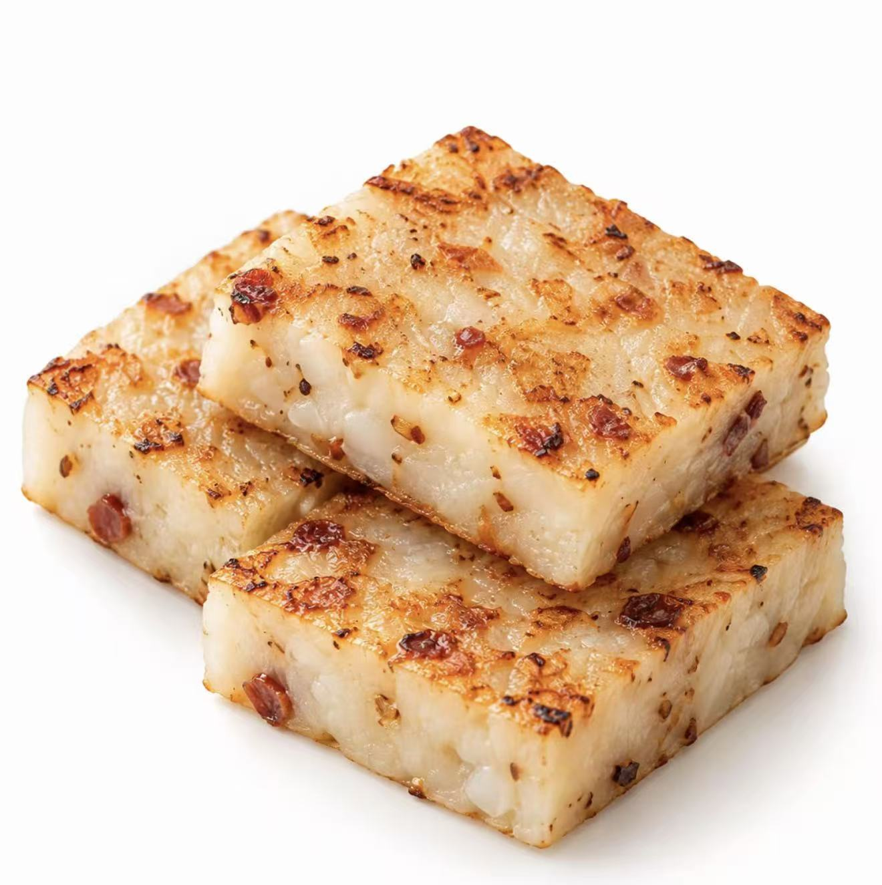
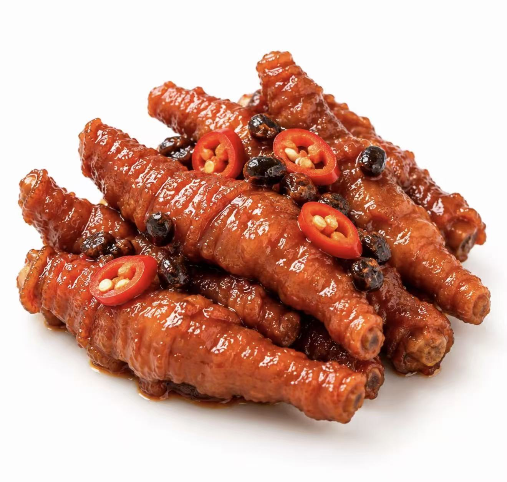
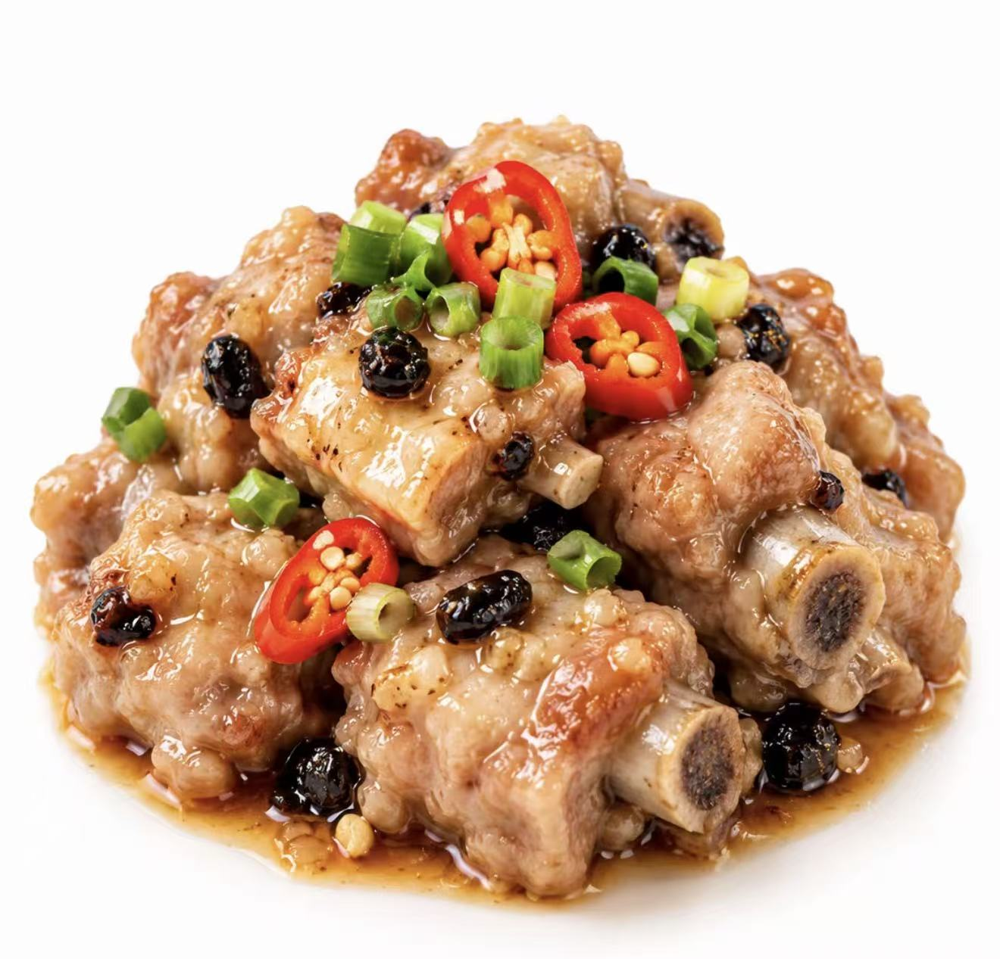

Turnip Cake
Crispy outside and soft inside.
Details
Made with Chinese radish and rice flour. It is steamed, sliced and pan-fried.
Dim sum with friend

Crispy outside and soft inside.

Tender chicken feet with soy sauce.

Small pork ribs with black bean sauce.
Fluffy buns with a sweet and savoury filling.
Open-top dumplings with a juicy filling.
Delicate dumplings filled with shrimp.